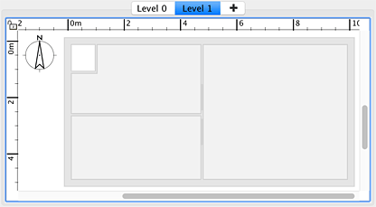
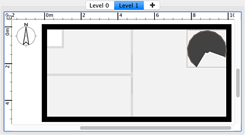

Ogni casa è creata con un livello predefinito, ma Sweet Home 3D è anche in grado di gestirne più
livelli, con un'elevazione positiva o negativa per ogni livello. Per aggiungere un nuovo livello, scegli Piano > Livelli > Aggiungi livello
o Piano > Livelli > Aggiungi livello alla stessa altezza dal menu. Quando una casa ha più di un livello,
alcune schede sono visualizzate nella parte superiore della vista della piantina e consentono di selezionare il livello in cui si desidera aggiungere alcuni oggetti.
Alla fine dell'elenco delle schede, appare anche una scheda con un segno + che puoi utilizzare per creare più livelli se necessario.
|  |
| Nuovo livello che mostra con un colore chiaro pareti e soffitti del livello inferiore |
Per aiutarti a trovare il tuo posto in un livello superiore, le pareti e i soffitti del livello inferiore vengono visualizzati con un colore chiaro nella vista della piantina. Se il livello selezionato è il livello più basso, i muri e i pavimenti del livello successivo saranno disegnati con un colore chiaro. Quando il magnetismo è attivo, il puntatore del mouse viene magnetizzato su pareti e stanze per consentirti di utilizzare più facilmente gli strumenti di disegno di pareti o stanze. Se necessario, puoi anche semplicemente copiare alcuni muri, stanze o mobili da un altro livello per incollarli nel nuovo livello.
Ogni livello ha un'elevazione e altri attributi che possono essere cambiati. Se la sommità di alcune pareti o di alcuni mobili aggiunti a un livello inferiore è più alta dell'elevazione del livello selezionato, appariranno a colori, come i muri perimetrali, la scala a chiocciola e la finestra a destra nella figura successiva.
|  |
| Nuovo livello che mostra a colori le pareti alte e i mobili del livello inferiore |
L'aggiunta di un nuovo livello non ha alcun effetto diretto nella vista 3D e nessun piano viene aggiunto automaticamente per separare un livello da un altro. È solo una volta che inizi a disegnare muri, stanze o aggiungi dei mobili che vedrai apparire questi nuovi oggetti all'altezza del nuovo livello. |